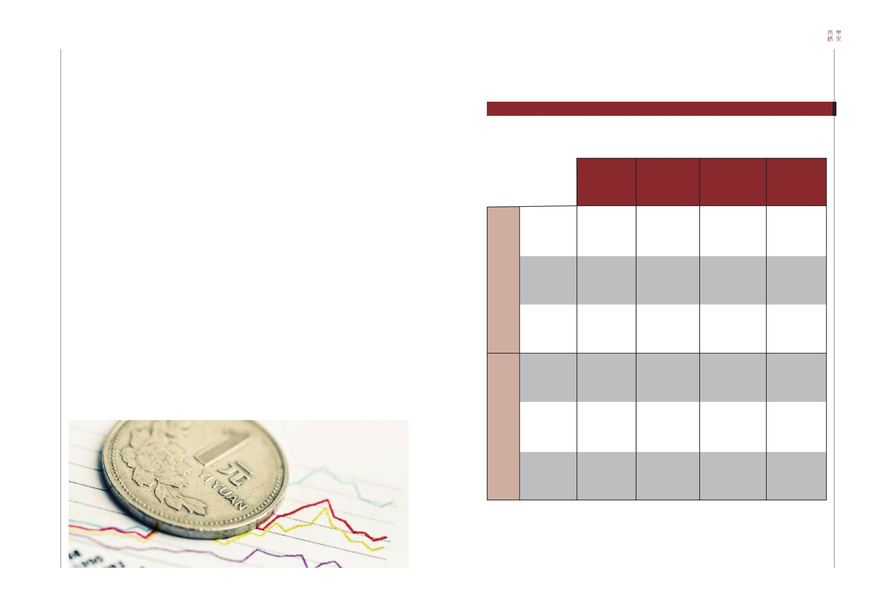

74-75 / 116
74-75 / 116


75
74
SOUTH CHINA ELITE
美國全國經濟研究所已確認上一個高峰及低谷分別是
2007年12月及2009年6月。根據表3統計總結，我們可以上一個
高峰及低谷、中位數、最高四分之一及最高值為基礎，預測
下一個高峰。
根據表4所列結果顯示，美國經濟顯然已通過「最高四分
之一」，並開始進入「最高值」。這意味著高峰即將來臨，
緊隨其後的是衰退。此時，企業管理應立即審視：
(a) 這是否擴展業務的好時機？
(b) 企業應否收緊客戶的信貸額度？
(c) 假若供應商終止供應鏈信貸額度，企業能否繼續生存？
(d) 企業是否過分依賴銀行短期貸款？
(e) 企業是否擁有足夠的現金及流動資產應對經濟衰退？
(f) 企業應否準備更多長期資金？
美國全國經濟研究所的經濟週期分析，主要聚焦於美
國。這個全球最大經濟體的繁榮及蕭條週期，會大大影響美
國入口及美國企業的全球策略。其它經濟體——尤其是以出
口為主的國家以及新興國家——將受到美國經濟蕭條影響。
NBER has confirmed the last peak as being
December 2007 and the last trough as June 2009. With
the summary statistics in Table 3, we can predict the next
peak. Projections can be estimated with the last peak
and trough plus medium, upper quartile and maximum.
Table 4 shows the results. It is obvious that the US
economy has just passed the dates of “Upper Quartile”
and is moving towards the “Maximum”. This means the
peak will arrive soon and recession will follow. Business
executives should immediately ask themselves:
(a) Is it a good time to expand the business?
(b) Should the firm scale down its credit lines offered
on customers?
(c) Will the firm be able to survive if suppliers stop their
supply-chain credit?
(d) Does the firm rely too heavily on short-term bank
loans?
(e) Does the firm have sufficient cash and liquid assets
to deal with economic downturns?
(f) Should the firm arrange more long-term funds?
NBER cycle analysis focuses on the US which
remains the largest economy in the world. Its economic
booms and busts will strongly affect its imports and the
global strategies of US companies. Other economies,
especially those export-oriented and emerging economies,
will suffer from US economic busts.
The next cycle peak: 2017-2019
下一個經濟高峰：2017年至2019年
TABLE
表
3
DURATION OF AN ECONOMIC CYCLE
經濟週期的持續時間
MEDIAN
中位數
UPPER QUARTILE
最高四分之一
MAXIMUM
最高值
MEDIAN
中位數
UPPER QUARTILE
最高四分之一
MAXIMUM
最高值
CYCLE DURATION AFTER 1950 (MONTHS)
1950年後之週期持續時間（月）
CYCLE DURATION AFTER 1950 (IN YEAR)
1950年後之週期持續時間（年）
Duration,
peak to trough
持續時間
(從高峰至低谷)
10.0
14.8
18.0
0.8
1.2
1.5
Duration,
trough to peak
持續時間
(從低谷至高峰)
51.5
87.3
120.0
4.3
7.3
10.0
Duration,
peak to peak
持續時間
(從高峰至高峰)
65.0
101.3
128.0
5.4
8.4
10.7
Duration,
trough to trough
持續時間
(從低谷至低谷)
59.5
97.8
128.0
5.0
8.1
10.7
NB: These statistics are calculated with the data in Table 2
註：以上數據根據表2計算得出。